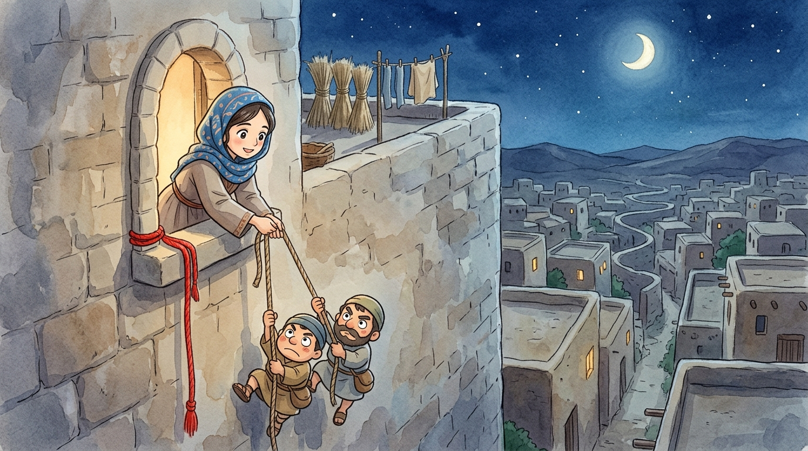
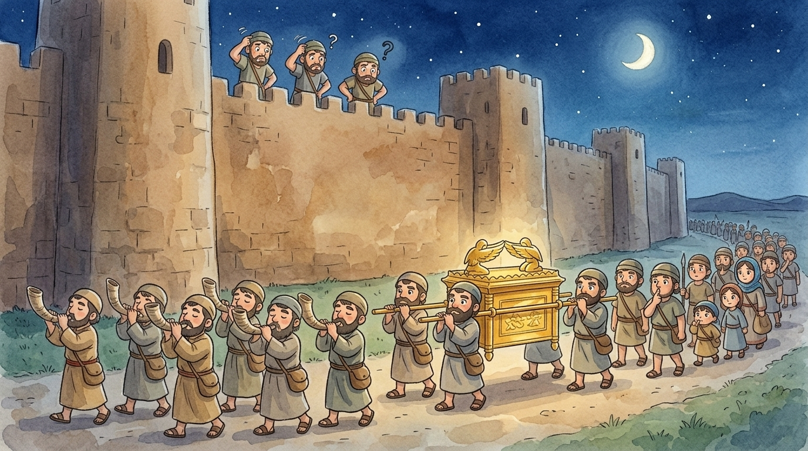
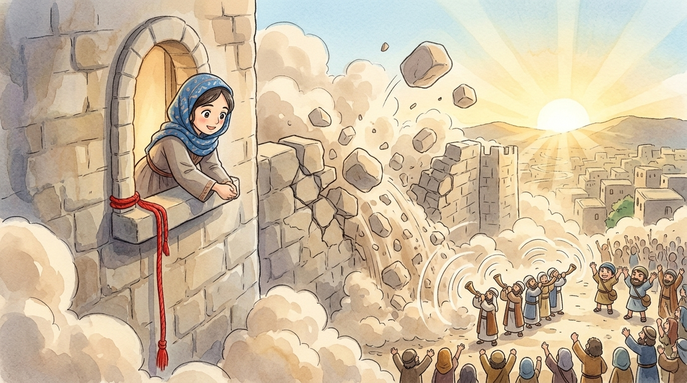

📰 THE JORDAN RIVER POST — Special Report
Good morning, readers! Your reporter here, standing on the plains of Canaan, staring up at the most famous fortress in the land: Jericho.1 Its walls are so high and thick that locals say nothing can ever knock them down. Nothing, dear readers, is a very big word. Keep reading.
The nation of Israel has crossed the Jordan River — on dry ground! Witnesses report the river simply stopped flowing while the whole nation walked across. Their God, it seems, treats rivers the way you treat a garden hose. Jericho has locked its gates. Nobody goes out. Nobody comes in.
The inside scoop: two spies and a scarlet cord
Before the crossing, our sources confirm, Joshua secretly sent two spies into Jericho. They found shelter at an inn built right into the city wall, run by a woman named Rahab. When the king's soldiers came pounding on her door, Rahab hid the spies under stalks of flax drying on her roof and sent the soldiers chasing the wrong way down the road.
Why would she risk everything for two strangers? Listen to what she told them — this reporter got chills:
The spies made her a promise: hang a scarlet cord in your window, gather your family inside, and every person in this house will be safe. Then Rahab lowered them by rope out her window, down the outside of the wall, and they escaped to the hills.2

The battle plan that made no sense
Now, readers, every general knows how you capture a walled city: ladders, battering rams, months of siege. So imagine the army's faces when Joshua announced the plan God had given him:
March around the city once a day for six days. Priests carry the Ark of the Covenant. Seven priests blow rams' horn trumpets. Everyone else: total silence. On day seven, march around seven times — then one long trumpet blast, and everybody SHOUT.
That's it. That's the whole plan. No ladders. No battering rams. Marching and shouting. One young soldier was overheard asking, "Sir… and then what?" And Joshua answered, "Then God does the rest."
Six very strange days
Day one: the entire nation marched around Jericho in total silence — just footsteps and the eerie cry of the trumpets. The guards on the wall laughed and shouted insults. The marchers said nothing at all, and went back to camp.
Day two: same thing. Day three: same thing. By day four, the guards weren't laughing anymore. There is something about a huge, silent, marching crowd that gets under your skin. Day five. Day six. Inside the walls, this reporter is told, nobody was sleeping well — except, perhaps, in one little house with a scarlet cord in the window.

Day seven: the shout heard around the world
Before dawn, they began. One lap. Two. Three. The sun climbed higher. Four. Five. Six. You could feel the whole city holding its breath. Then, on the seventh lap, the marching stopped. The seven priests raised their trumpets and blew one long, endless note — and Joshua's voice rang out:
And the people shouted — a roar from hundreds of thousands of throats, forty years of desert waiting packed into one thunderclap of sound. And then, readers, I saw it with my own eyes and I will never forget it: the great walls of Jericho cracked, crumbled, and came crashing down flat.3 The army walked straight in, every soldier from where he stood.

Battering rams used: 0 · Ladders: 0 · Laps marched: 13 · Trumpets: 7 · Shouts: 1 · Walls left standing: just the part holding one house with a scarlet cord.
Yes — Rahab and her whole family were brought out safe, exactly as promised. She joined the people of Israel, and here's the part that gives this reporter goosebumps: keep her name in mind. Rahab's family line leads, many generations later, to King David — and beyond.4
This has been The Jordan River Post. Remember, dear readers: the walls in your life may look unbreakable — but no wall is too tall for God. Sometimes He simply asks you to trust Him, take the next lap, and wait for His moment. And when it comes… feel free to shout. 🎺